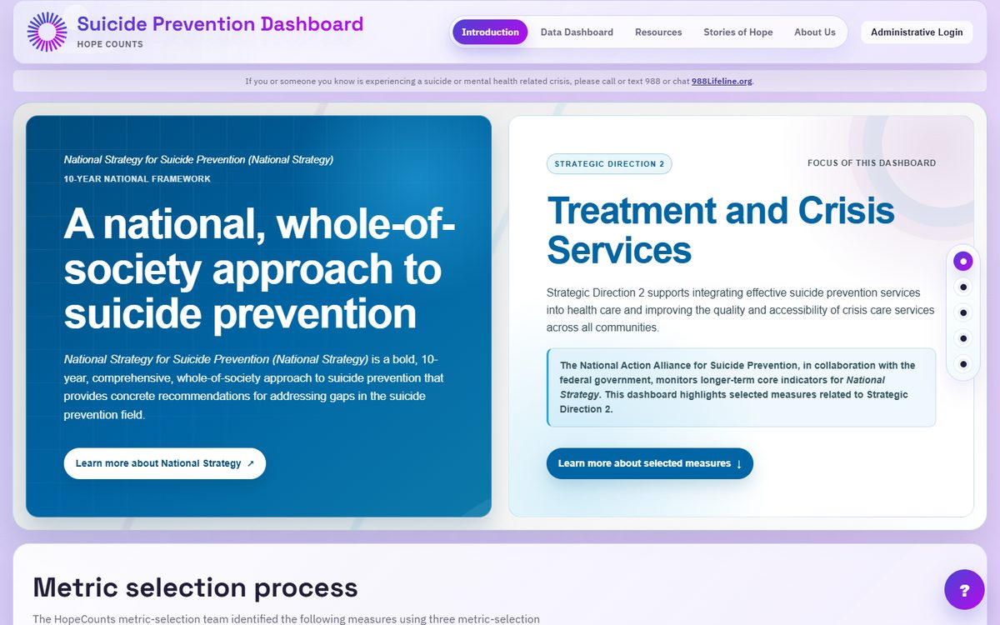

Principal Investigator
Newly funded · 2026
National Strategy for Suicide Prevention Dashboard
A secure surveillance and planning dashboard that turns state and community data into accessible visualizations and decision-support views for prevention partners.
- Sponsor
- HHS — Substance Abuse & Mental Health Services Administration (SAMHSA)
- Period
- Oct 2026 – Sep 2027 (Year 2)
- Team
- Erin Maher (Lead PI), Sai Kiran Maryada (PI)
